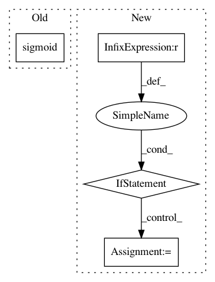

0d8f7ad4309f4053d1e9cd5d99435a03c5e2a8a5,nab/scorer.py,Scorer,getScore,#Scorer#,148
Before Change
fnScore += self.costMatrix["fnWeight"]
else:
dist = (window.indices[-1] - tpIndex)/float(self.length)
tpScore += (2*sigmoid(dist) - 1)*self.costMatrix["tpWeight"]
fpLabels = self.data[self.data["type"] == "fp"]
fpScore = 0
After Change
if tpIndex == -1:
fnScore -= self.costMatrix["fnWeight"]
else:
if window.length <= 1:
newdist = -2.0
else:
newdist = -(window.indices[-1] - tpIndex)/float(window.length-1)
tpScore += scaledSigmoid(newdist)*self.costMatrix["tpWeight"]
// Go through each false positive and score it. Each FP leads to a negative
// contribution dependent on how far it is from the previous window.
In pattern: SUPERPATTERN
Frequency: 3
Non-data size: 4
Instances
Project Name: numenta/NAB
Commit Name: 0d8f7ad4309f4053d1e9cd5d99435a03c5e2a8a5
Time: 2014-10-27
Author: sahmad@numenta.com
File Name: nab/scorer.py
Class Name: Scorer
Method Name: getScore
Project Name: uber/pyro
Commit Name: 28eb8ed1d64fb8d5cfddc58d65fc48aeace6f436
Time: 2020-06-28
Author: info@stefanwebb.me
File Name: pyro/distributions/transforms/spline.py
Class Name: ConditionalSpline
Method Name: condition
Project Name: reinforceio/tensorforce
Commit Name: 92880f8941450b497628b3c5426c40912d1015b8
Time: 2017-07-15
Author: aok25@cl.cam.ac.uk
File Name: tensorforce/core/distributions/gaussian.py
Class Name: Gaussian
Method Name: create_tf_operations